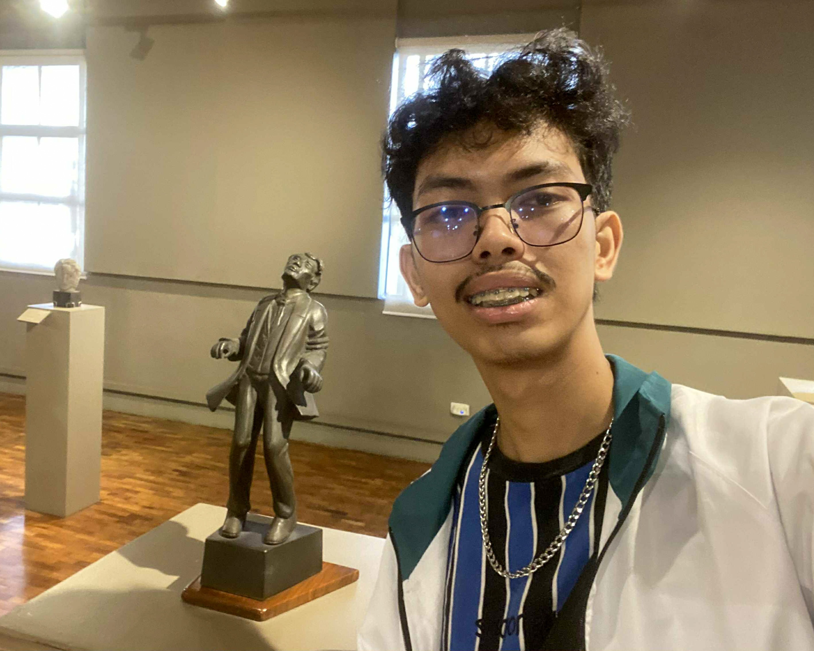
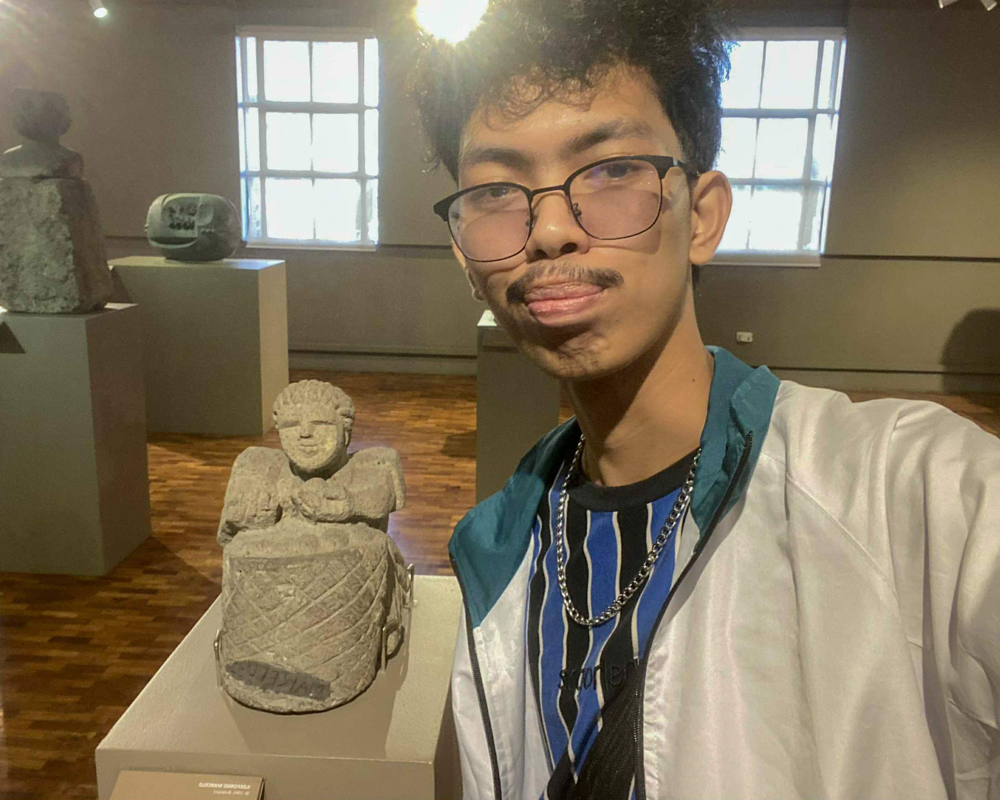
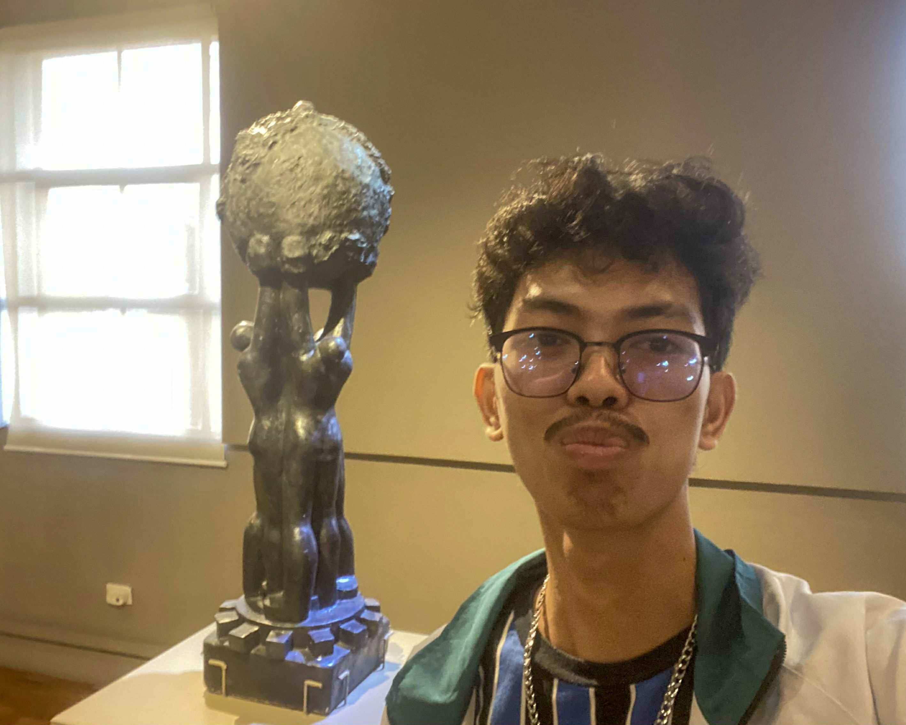
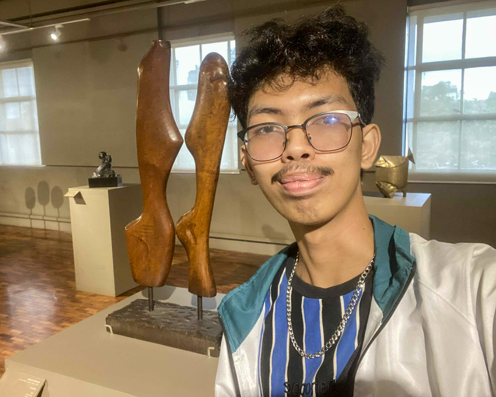

The Martyrdom of Dr. Jose Rizal by Eduardo Castrillo (1991, Bronze)
This artwork reminds me of a very painful but important moment in our history. Seeing Rizal in his final moments shows that our freedom came from people who were brave enough to stand for truth even when their lives were at risk. The sculpture makes me admire Rizal because he fought for the country through his writings, ideas, and love for learning. It shows that one person can inspire many others. As a student, this artwork reminds me why education matters. Rizal believed that learning helps people understand what is right and how to help others. When I think of this sculpture, I feel encouraged to study well, speak honestly, and use my knowledge to do good. Rizal’s story teaches me to work hard and to care for the country in meaningful ways.

Paglalakbay by Rey Paz Contreras
(1990, Molave Wood)
(1990, Molave Wood)
Paglalakbay means journey, and this artwork truly feels like a story about the Filipino experience. It makes me think of the long path our people have taken, filled with struggles, changes, and moments of strength. The use of molave wood, which is strong and lasting, reminds me that Filipinos stay brave even in hard times. This artwork also connects to my own journey in life. As a student, I face challenges, lessons, and successes that help me grow. Sometimes moving forward feels slow or tiring, but Paglalakbay teaches me to be patient and keep going. It shows that progress happens step by step. This artwork reminds me to value both the easy and the difficult moments because they shape who I am. It encourages me to stay determined and hopeful in my own journey.

World Brotherhood by Federico Estrada
(circa 1960, Plaster of Paris)
(circa 1960, Plaster of Paris)
World Brotherhood gives a peaceful and hopeful feeling. It was made during a time when countries were trying to recover from war, which makes its message even stronger. When I look at this artwork, I am reminded that kindness and cooperation can bring people together no matter where they come from. It teaches me to respect others, listen to different ideas, and appreciate diversity. In school, I meet classmates with different backgrounds, and working well with them helps create a friendly and peaceful environment. The artwork shows that understanding and patience are important in building harmony. It inspires me to be someone who chooses peace instead of conflict. World Brotherhood teaches me that the world becomes a better place when people work together, treat each other with respect, and choose unity despite their differences.

Affection by Federico Estrada
(1963, Narra Wood)
(1963, Narra Wood)
Affection shows the warm and caring nature of Filipino life. The artwork expresses simple acts of love that we often see in families and friendships. The use of narra wood, known for its strength, reminds me that strong relationships can support us during difficult times. This artwork makes me think of the people who show me patience and kindness every day. A smile, a gentle touch, or kind words can make a big difference, especially when I am stressed or tired from school. Affection encourages me to treat others with the same care that I hope to receive. It teaches me that love is not always shown through big actions. It can be found in small moments that make life brighter. This artwork reminds me that kindness and compassion are powerful and lasting.

Father and Child by Ildefonso Marcelo
(1982, Adobe or Volcanic Tuff)
(1982, Adobe or Volcanic Tuff)
Father and Child clearly shows the strong bond between parents and children. The sculpture reminds me of the love, guidance, and sacrifices that parents give so their children can have a better life. The use of adobe or volcanic tuff makes the artwork feel strong and solid, just like the support that families provide. This piece makes me think of the lessons I have learned from my parents and elders. Their hard work and advice guide my choices and help shape my future. As a student, the artwork inspires me to do my best, not only for myself but also to honor their efforts. It teaches me respect, gratitude, and responsibility. Father and Child shows how family plays an important role in Filipino life and how love passed from one generation to another creates strength.